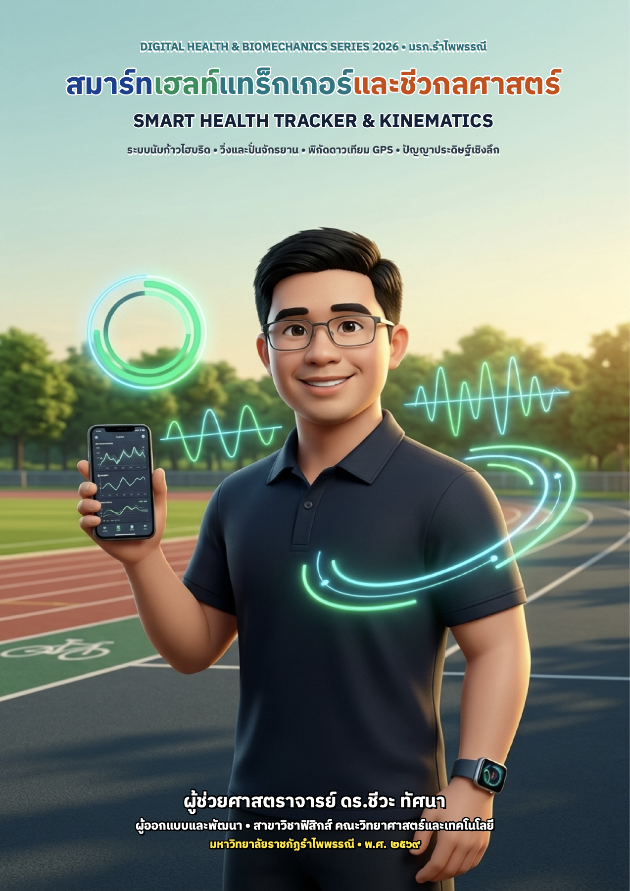

สมดุลจังหวะก้าวเดิน & อัจฉริยภาพการเคลื่อนไหวสุขภาพดิจิทัล • ผศ.ดร.ชีวะ ทัศนา (มรภ.รำไพพรรณี)

ออกแบบและพัฒนาโดย ผู้ช่วยศาสตราจารย์ ดร.ชีวะ ทัศนา • คณะวิทยาศาสตร์และเทคโนโลยี มหาวิทยาลัยราชภัฏรำไพพรรณี
สมดุลจังหวะก้าวเดิน & โค้ชสุขภาพอัจฉริยะ • Package: com.rbru.health.smart_health_tracker
อัจฉริยภาพการเคลื่อนไหว คณะวิทยาศาสตร์และเทคโนโลยี มรภ.รำไพพรรณี • Package: com.scirbru.move.ai
แสดงจำนวนก้าวในแต่ละช่วงเวลาของวัน (00:00 - 23:00 น.)
จำลองการตรวจจับก้าวเดิน วิ่ง ปั่นจักรยาน หรือส่งสัญญาณซิงค์กับฐานข้อมูล
พิกัดอ้างอิง: มหาวิทยาลัยราชภัฏรำไพพรรณี จันทบุรี (12.65651°N, 102.10642°E) • รองรับ เดิน, วิ่ง, ปั่นจักรยาน และส่งออก GeoJSON
| วัน-เวลา | ประเภทกิจกรรม | ระยะทาง (km) | ความเร็วเฉลี่ย | พลังงาน (kcal) | พิกัดดาวเทียม |
|---|---|---|---|---|---|
| วันนี้ • 06:30 น. | 🚴 ปั่นจักรยาน | 5.40 km | 21.4 km/h | 185.0 kcal | RBRU Campus Loop (42 pts) |
| วานนี้ • 17:15 น. | 🏃 วิ่งออกกำลังกาย | 3.25 km | 9.2 km/h | 240.5 kcal | RBRU Stadium Track (68 pts) |
เชื่อมต่อข้อมูลอัตโนมัติจากแอปพลิเคชัน SciRBRU Move+AI และ ChewaPulse xAI เข้าสู่ฐานข้อมูลกลางของคณะฯ (แยกตาม 9 สาขาวิชา/หน่วยงาน)
| สาขาวิชา / หน่วยงาน | บุคลากร | ก้าวสะสมรวม | สัดส่วน |
|---|
| อันดับ | ชื่อ-นามสกุล (รหัส) | สาขาวิชา | ก้าวสะสมปีงบ 70 |
|---|